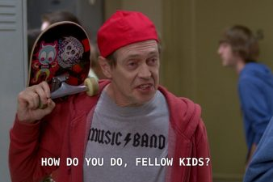
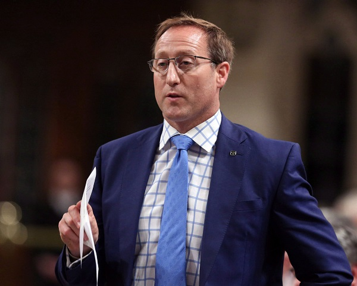

Donor-Right Tired of Pretending
November 14th, 2020
National Post:
TDC_ARTICLE_START
CALGARY — In a speech before Conservative faithful in Calgary Monday evening, just hours after he kicked off his campaign to lead the party, Erin O’Toole tried to paint himself as the candidate who is neither Peter MacKay or Andrew Scheer, imploring the crowd to back him as the man who could lead the party back into power in Ottawa.
Held at a luxurious and exclusive private club in downtown Calgary, in his speech, O’Toole rattled off several ideas baked into the conservative canon: a strong military, opposition to the carbon tax, nostalgia for the years when Stephen Harper was prime minister and a distaste for the policies of Justin Trudeau’s Liberal government.
TDC_ARTICLE_STOP
Okay, bitchy though it is, this Tyler Dawson guy isn't doing a terrible job of shiving it to the Donor-Right Candidate. I mean, I know that this is just to try to get Left-NPC's really invested, but it's never a bad idea to point out how disconnected these shills are from the peasants they seek to rule over.
As far as the policies go, sure whatever, it's okay. Of course, if you see anything okay in a Donor-Right platitude, you can be assured that's what they're going to lose on, while giving corporations everything they want.
TDC_ARTICLE_START
“People are losing their jobs. People are losing their homes. People are losing hope,” said O’Toole. “And what have we been doing? Fighting amongst ourselves, at times, instead of taking the fight where we need to — to defeating Justin Trudeau.”
TDC_ARTICLE_STOP
I shouldn't get too down on this, they do it because it works, but this is a classic example of Finkelthink in action. Get the peasants riled up with "look how bad Donor-Side Puppet is," and then you don't have to worry about actually talking about policy. Talking about policy is bad for these shills, since they have no intention of delivering anything. Since they have no intention of delivering anything, and that pisses off people, they would prefer to turn elections into popularity contests, with nothing on the table except "he bad, no HE bad." We can also see the calls for unity, which is another way of them INB4'ing them not actually doing anything for you. It's the classic lesser of two evils argument.
TDC_ARTICLE_START
The event, held in a rather resplendent burgundy and wood-panelled room, featuring portraits of the moustachioed founders of The Ranchmen’s Club, saw some 150 people show up to hear O’Toole speak. Before O’Toole took to the lectern, those in the crowd chatted, some mulling over O’Toole versus MacKay, sipping on $9.50 import beers and $10 glasses of wine, and nibbling at a vast array of cheeses set out in the centre of the room. (Some, it appeared, were in flagrant violation of the strict dress code, while others had their furs and black suits; the dazzling array of outfits one sees among events featuring the well-heeled.)
TDC_ARTICLE_STOP
Again, not shilling for Tyler Dawson, the author of this piece, but he's showing us the best way of putting these faggots down. Don't even talk to them about policy, just laugh at their "hellow fellow Peasants routine."
Like this, but for you, goy.
TDC_ARTICLE_START
Moving in between English and French — “I speak like a soldier, not a diplomat” — he said he will respect all conservatives and work together and build a positive, conservative vision of Canada.
“We spend too much time talking about the country that we don’t want to see. It’s time that we start talking about being for a strong and united Canada and only our strong conservative principles can make that happen,” said O’Toole.
TDC_ARTICLE_STOP
Ouuurrrr vallUEESSSS
TDC_ARTICLE_START
O’Toole, laying out his attack lines early, also moved quickly to paint MacKay, a former Nova Scotia member of Parliament and O’Toole’s main opponent, as a person who would drag the Conservative party towards the Liberals.
“No thanks!” quipped someone in the crowd, to laughs.
And, in response to an audience member’s question after his 10-minute speech, O’Toole said he would march in a Pride parade — an issue that, along with a host of other socially conservative issues, has dogged Scheer throughout his tenure as leader of the party. It’s a tough balance, the questioner said, to hold together a big tent party without alienating progressive conservatives and social conservatives.
For O’Toole, it’s about respect, he said, saying Stephen Harper showed how to do this.
“There are no albatrosses in my Conservative party,” O’Toole said.
“On the parade issue, as someone that served in uniform alongside members of the Canadian Armed Forces that may have been members of the LGBT community, they stood up for this country and if I can do something in a way that’s appropriate, not part of a political agenda … I will show up to show that I stand up for rights. I wore a uniform doing that.”
More generally, O’Toole said: “I did not run in public life to remove the rights of other Canadians.”
TDC_ARTICLE_STOP
Holy shit this guys bad. Talk about being transparently full of shit. "I wore a uniform doing that," yeah LOL, you wore a uniform serving for ZOG. And yes, I have no problem talking shit on these shills. 90% of Veterans are pissed about being used for Israel and the MIC. This guys just a fucking shill.
But I do love how he's talking about Peter McKay taking the party in a direction that's too POZed, then immediately turns around and talks about his support of LGBT. Oh yeah this is definitely going to turn into transactional politics. This is the guy who is really going to get rid of child trannies, and put all those pushing that in jail.
TDC_ARTICLE_START
He took about 20 minutes of questions from the crowd, saying he opposes the carbon tax, and believes good policy will win seats in Quebec, but that the “bumper crop” of seats and votes is going to be breaking into the seats around the Greater Toronto Area.
“I am here to say I am going to deliver that to you,” he said.
He also waded into the language issue: MacKay has faced criticism over his French abilities.
“It’s very important to have a leader that can listen and reach out in both languages,” said O’Toole.
And, threading its way throughout the questioning, and the speech, were issues of debt, national unity and getting energy projects completed. The answer, to all of these, for O’Toole, was simple, and the crowd was receptive.
“The real solution is getting rid of Justin Trudeau.”
TDC_ARTICLE_STOP
The real solution to your problems, goy, is getting rid of Donor-Left Puppet. Please don't pay too much attention to my complete lack of any serious policy proposals. Focus all your energy supporting me, and then at some unspecified moment in the future, I'll make sure that you get tangible policy. Or maybe not, maybe tangible policy is just getting Trudeau out of office.
Hey, works for the Upper Middle Class Faggots who showed up to a mahogany lodge to talk politics. I guess all they want is a guy who lets them socially signal as not being too crazy on the tranny stuff, while still completely supporting 100% of GloboHomoSchlomo. And pretending that they have a seat at the table lets them feel like they're winning. Just like cheering for a Sportsball team.
Oh but he speaks French slightly better than other puppet. How could I forget something as crucially unimportant to actual policy?
Sorry Peter, you're not the chosen puppet
What is needed is a political machine for us.